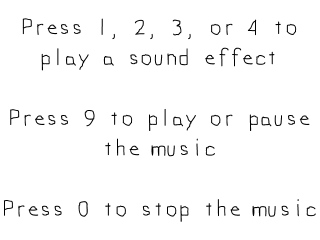

Sound Effects and Music

Last Updated 3/9/14
Up until now we've only been dealing with video and input. Most games made require some sort of sound and here we'll be using SDL_mixer to play audio for us.//Using SDL, SDL_image, SDL_mixer, standard IO, and strings
#include <SDL.h>
#include <SDL_image.h>
#include <SDL_mixer.h>
#include <stdio.h>
#include <string>
SDL_mixer is a library we use to make audio playing easier (because it can get
complicated). We have to set it up just like we
set up SDL_image. Like before, it's just a matter of having the headers files,
library files, and binary files in the right place with your compiler configured to use them.
//The music that will be played
Mix_Music *gMusic = NULL;
//The sound effects that will be used
Mix_Chunk *gScratch = NULL;
Mix_Chunk *gHigh = NULL;
Mix_Chunk *gMedium = NULL;
Mix_Chunk *gLow = NULL;
The SDL_mixer data type for music is
Mix_Music and one short sounds is
Mix_Chunk. Here we declare pointers for the music and sound effects we'll be using.
//Initialize SDL
if( SDL_Init( SDL_INIT_VIDEO | SDL_INIT_AUDIO ) < 0 )
{
printf( "SDL could not initialize! SDL Error: %s\n", SDL_GetError() );
success = false;
}
Since we're using music and sound effects, we need to initialize audio along with video for this demo.
//Initialize PNG loading
int imgFlags = IMG_INIT_PNG;
if( !( IMG_Init( imgFlags ) & imgFlags ) )
{
printf( "SDL_image could not initialize! SDL_image Error: %s\n", IMG_GetError() );
success = false;
}
//Initialize SDL_mixer
if( Mix_OpenAudio( 44100, MIX_DEFAULT_FORMAT, 2, 2048 ) < 0 )
{
printf( "SDL_mixer could not initialize! SDL_mixer Error: %s\n", Mix_GetError() );
success = false;
}
To initialize SDL_mixer we need to call Mix_OpenAudio. The first argument sets the
sound frequency, and 44100 is a standard frequency that works on most systems. The second argument determines the sample format, which again here we're using the default. The
third argument is the number of hardware channels, and here we're using 2 channels for stereo. The last argument is the sample size, which determines the size of the chunks we use
when playing sound. 2048 bytes (AKA 2 kilobyes) worked fine for me, but you may have to experiment with this value to minimize lag when playing sounds.
If there's any errors with SDL_mixer, they're reported with Mix_GetError.
If there's any errors with SDL_mixer, they're reported with Mix_GetError.
bool loadMedia()
{
//Loading success flag
bool success = true;
//Load prompt texture
if( !gPromptTexture.loadFromFile( "21_sound_effects_and_music/prompt.png" ) )
{
printf( "Failed to load prompt texture!\n" );
success = false;
}
//Load music
gMusic = Mix_LoadMUS( "21_sound_effects_and_music/beat.wav" );
if( gMusic == NULL )
{
printf( "Failed to load beat music! SDL_mixer Error: %s\n", Mix_GetError() );
success = false;
}
//Load sound effects
gScratch = Mix_LoadWAV( "21_sound_effects_and_music/scratch.wav" );
if( gScratch == NULL )
{
printf( "Failed to load scratch sound effect! SDL_mixer Error: %s\n", Mix_GetError() );
success = false;
}
gHigh = Mix_LoadWAV( "21_sound_effects_and_music/high.wav" );
if( gHigh == NULL )
{
printf( "Failed to load high sound effect! SDL_mixer Error: %s\n", Mix_GetError() );
success = false;
}
gMedium = Mix_LoadWAV( "21_sound_effects_and_music/medium.wav" );
if( gMedium == NULL )
{
printf( "Failed to load medium sound effect! SDL_mixer Error: %s\n", Mix_GetError() );
success = false;
}
gLow = Mix_LoadWAV( "21_sound_effects_and_music/low.wav" );
if( gLow == NULL )
{
printf( "Failed to load low sound effect! SDL_mixer Error: %s\n", Mix_GetError() );
success = false;
}
return success;
}
Here we load our splash texture and sound.
To load music we call Mix_LoadMUS and to load sound effect we call Mix_LoadWAV.
To load music we call Mix_LoadMUS and to load sound effect we call Mix_LoadWAV.
void close()
{
//Free loaded images
gPromptTexture.free();
//Free the sound effects
Mix_FreeChunk( gScratch );
Mix_FreeChunk( gHigh );
Mix_FreeChunk( gMedium );
Mix_FreeChunk( gLow );
gScratch = NULL;
gHigh = NULL;
gMedium = NULL;
gLow = NULL;
//Free the music
Mix_FreeMusic( gMusic );
gMusic = NULL;
//Destroy window
SDL_DestroyRenderer( gRenderer );
SDL_DestroyWindow( gWindow );
gWindow = NULL;
gRenderer = NULL;
//Quit SDL subsystems
Mix_Quit();
IMG_Quit();
SDL_Quit();
}
When we're done with audio and want to free it, we call
Mix_FreeMusic to free music and
Mix_FreeChunk to free a sound effect.
We call Mix_Quit to close down SDL_mixer.
//Handle key press
else if( e.type == SDL_KEYDOWN )
{
switch( e.key.keysym.sym )
{
//Play high sound effect
case SDLK_1:
Mix_PlayChannel( -1, gHigh, 0 );
break;
//Play medium sound effect
case SDLK_2:
Mix_PlayChannel( -1, gMedium, 0 );
break;
//Play low sound effect
case SDLK_3:
Mix_PlayChannel( -1, gLow, 0 );
break;
//Play scratch sound effect
case SDLK_4:
Mix_PlayChannel( -1, gScratch, 0 );
break;
In the event loop, we play a sound effect when the 1, 2, 3, or 4 keys are pressed. The way to play a Mix_Chunk is by calling
Mix_PlayChannel. The first argument is the channel you want to use to play it. Since
we don't care which channel it comes out of, we set the channel to negative 1 which will use the nearest available channel. The second argument is the sound effect and last argument
is the number of times to repeat the effect. We only want it to play once per button press, so we have it repeat 0 times.
A channel in this case is not the same as a hardware channel that can represent the left and right channel of a stereo system. Every sound effect that's played has a channel associated with it. When you want to pause or stop an effect that is play, you can halt its channel.
A channel in this case is not the same as a hardware channel that can represent the left and right channel of a stereo system. Every sound effect that's played has a channel associated with it. When you want to pause or stop an effect that is play, you can halt its channel.
case SDLK_9:
//If there is no music playing
if( Mix_PlayingMusic() == 0 )
{
//Play the music
Mix_PlayMusic( gMusic, -1 );
}
//If music is being played
else
{
//If the music is paused
if( Mix_PausedMusic() == 1 )
{
//Resume the music
Mix_ResumeMusic();
}
//If the music is playing
else
{
//Pause the music
Mix_PauseMusic();
}
}
break;
case SDLK_0:
//Stop the music
Mix_HaltMusic();
break;
}
}
For this demo, we want to play/pause the music on a 9 keypress and stop the music on a 0 keypress.
When the 9 key pressed we first check if the music is not playing with Mix_PlayingMusic. If it isn't, we start the music with Mix_PlayMusic. The first argument is the music we want to play and the last argument is the number of times to repeat it. Negative 1 is a special value saying we want to loop it until it is stopped.
If there is music playing, we check if the music is paused using Mix_PausedMusic. If the music is paused, we resume it using Mix_ResumeMusic. If the music is not paused we pause it using Mix_PauseMusic.
When 0 is pressed, we stop music if it playing using Mix_HaltMusic.
When the 9 key pressed we first check if the music is not playing with Mix_PlayingMusic. If it isn't, we start the music with Mix_PlayMusic. The first argument is the music we want to play and the last argument is the number of times to repeat it. Negative 1 is a special value saying we want to loop it until it is stopped.
If there is music playing, we check if the music is paused using Mix_PausedMusic. If the music is paused, we resume it using Mix_ResumeMusic. If the music is not paused we pause it using Mix_PauseMusic.
When 0 is pressed, we stop music if it playing using Mix_HaltMusic.